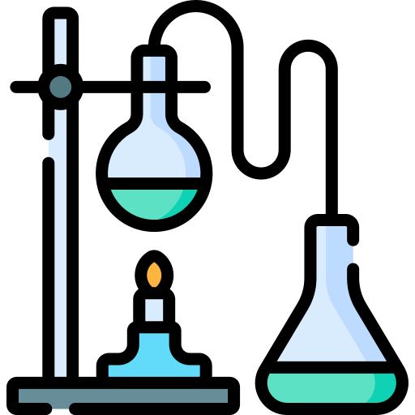
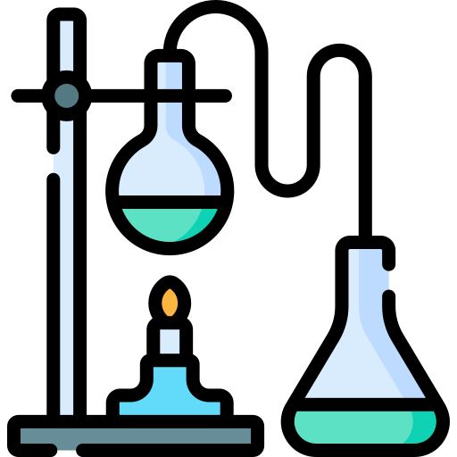

Healthcare and hygiene products form the cornerstone of public health and safety, serving critical roles in medical care, personal protection, and sanitation. Our comprehensive testing services ensure these essential products meet the highest standards of quality, safety, and regulatory compliance across global markets. Through rigorous testing protocols and advanced analytical methods, we help manufacturers, healthcare providers, and innovators deliver products that consumers and healthcare professionals can trust.

At our testing facilities, we maintain strict adherence to a comprehensive framework of international, European, and UK standards that govern health and hygiene products. Our testing protocols align with the Medical Device Regulation (MDR) and In Vitro Diagnostic Regulation (IVDR), ensuring products meet the stringent requirements for safety and performance. We conduct thorough evaluations following EN 14683 for medical face masks, verifying bacterial filtration efficiency, differential pressure, and splash resistance. For medical gloves and protective equipment, we implement the EN 455 series standards, encompassing requirements for freedom from holes, dimensions, and biological safety evaluation.
Our laboratories are accredited under ISO/IEC 17025:2017, demonstrating our technical competence and ability to produce precise, accurate test data. We integrate ISO 13485:2016 principles into our quality management system, specifically tailored for medical devices and related services. The biocompatibility of materials is assessed through the EN ISO 10993 series, including cytotoxicity, sensitization, and irritation testing. For sterilization validation, we follow EN ISO 11137 for radiation sterilization and EN ISO 11135 for ethylene oxide sterilization processes.
In compliance with UK regulations, we implement the UK MDR 2002 requirements and MHRA guidelines, ensuring products meet post-Brexit British conformity standards. Our testing protocols incorporate British Standards Institution (BSI) specifications and Good Laboratory Practice (GLP) principles. For chemical disinfectants and antiseptics, we follow EN 14476 and EN 13727, evaluating antimicrobial efficacy under practical conditions. Packaging integrity testing adheres to EN ISO 11607, ensuring sterile barrier systems maintain product safety throughout their lifecycle.
We conduct cosmetic product safety assessments following Regulation (EC) No 1223/2009 and ISO 22716 for Good Manufacturing Practices. Environmental testing aligns with ISO 14001 standards, addressing sustainability and environmental impact. Our microbiological testing follows EN ISO 11737 for sterilization of medical devices, ensuring accurate bioburden determination and sterility assurance. For personal protective equipment, we implement EN 149 for respiratory protection and EN 14126 for protection against infectious agents.
Our testing expertise extends across diverse healthcare and hygiene sectors, each requiring specialized knowledge and sophisticated analytical approaches. In the medical device sector, we conduct comprehensive evaluations of surgical instruments, diagnostic equipment, and therapeutic devices, ensuring they meet safety and performance requirements while maintaining sterility throughout their lifecycle. Our testing protocols for personal protective equipment encompass material integrity, barrier effectiveness, and usability studies, providing healthcare workers and professionals with reliable protection in demanding environments.
In pharmaceutical packaging analysis, we evaluate container closure systems, examining material compatibility, moisture vapor transmission rates, and extraction profiles to ensure product stability and safety. Our cosmetics and personal care testing services address safety assessments, stability studies, and efficacy claims verification, supporting manufacturers in delivering safe and effective products to market. For hygiene products, we conduct absorbency testing, skin compatibility studies, and durability assessments, ensuring consistent performance under various usage conditions.

- Material Safety Assessment: Examining toxicological properties, skin compatibility, and allergen potential using sophisticated analytical methods that ensure consumer safety.
- Durability and Performance Testing: Measuring critical parameters including tensile strength, elasticity, and tear resistance, confirming products maintain their intended functionality throughout their lifecycle.
- Sterility and Biocompatibility Testing: Ensuring products meet stringent healthcare standards through comprehensive microbiological assessment and tissue compatibility studies.
- Chemical and Microbial Resistance Testing: Evaluating product integrity against environmental factors and contaminants, verifying sustained protection throughout the product's shelf life.
- Environmental Sustainability Testing: Assessing biodegradability and recyclability to support eco-conscious product development while maintaining performance standards.
Personal protective equipment, including masks, gloves, face shields, gowns, and coveralls, is designed to protect individuals from harmful airborne particles, pathogens, and physical hazards. Our testing services evaluate the materials for key factors such as:
- Filtration Efficiency: Ensuring masks and other PPE effectively filter out harmful particles, bacteria, and viruses.
- Breathability & Comfort: Testing how breathable the materials are to ensure comfort during extended use without compromising protective capabilities.
- Durability: Assessing the strength of materials and their ability to maintain protective qualities under wear and tear.
Medical supplies such as syringes, IV tubes, catheters, blood bags, and diagnostic test kits are essential in healthcare settings. We conduct extensive testing to guarantee:
- Sterility: Ensuring that medical products are free from contaminants to reduce the risk of infections during medical procedures.
- Biocompatibility: Testing the materials to ensure they are compatible with the human body, preventing adverse reactions when used in medical applications.
- Integrity & Reliability: Evaluating the durability and performance of medical supplies under various conditions to ensure they perform as expected during critical procedures.
Sanitary products, including diapers, sanitary napkins, tampons, and disposable underpads, are key for personal hygiene and health, especially in healthcare settings. Our testing focuses on:
- Absorbency: Assessing how effectively the product absorbs moisture and prevents leaks.
- Skin Sensitivity: Testing for hypoallergenic properties and ensuring materials are gentle on the skin.
- Comfort & Fit: Evaluating the overall comfort, design, and fit to enhance user experience and prevent irritation.
The packaging of health and hygiene products plays a critical role in maintaining their integrity, sterility, and functionality. We test packaging materials like blister packs, sanitizer bottles, and sterile wraps for:
- Tamper Evidence: Ensuring packaging provides clear evidence if it has been compromised.
- Leak Resistance: Evaluating the strength of seals and closures to prevent contamination and product loss.
- Material Integrity: Ensuring the packaging material is durable and capable of protecting the product from environmental factors like moisture, heat, and light.
Toiletries such as toothbrushes, razors, combs, and soap dispensers are everyday items that require functional and safety testing. Our tests ensure:
- Durability: Assessing the strength and longevity of materials, especially when subjected to moisture, friction, and repetitive use.
- Safety: Ensuring that products are free from hazardous chemicals or materials that could pose a risk to the user.
- Effectiveness: Testing for performance, such as the proper functionality of a razor or the bristle effectiveness of a toothbrush.
Polymer-based cleaning tools like mops, brushes, and buckets are crucial for maintaining cleanliness in homes, hospitals, and public spaces. Our testing ensures:
- Material Strength & Resistance: Evaluating the robustness of the materials used and ensuring they are resistant to wear, harsh chemicals, and constant use.
- Ease of Use & Ergonomics: Testing for comfort in handling, particularly for cleaning tools used over extended periods.
- Cleaning Efficiency: Ensuring that the products effectively perform their intended cleaning and sanitation tasks.
Medical equipment components, such as ventilator parts, diagnostic device casings, and monitoring systems, must meet strict reliability and durability standards. Our testing services include:
- Structural Integrity: Ensuring components can withstand mechanical stress, vibration, and temperature changes without failure.
- Compatibility with Medical Applications: Testing for biocompatibility, electrical safety, and functional reliability in medical environments.
- Performance Under Extreme Conditions: Evaluating how well components function under various environmental conditions such as temperature fluctuations and humidity.
Contact lenses and optical products must provide clear vision and be safe for eye health. We conduct tests on:
- Comfort & Fit: Ensuring that lenses fit comfortably and do not irritate the eye.
- Durability & Resistance: Evaluating resistance to wear, tear, and the effects of cleaning or disinfecting solutions.
- Optical Clarity & Performance: Testing for vision clarity and performance under different lighting conditions.
Disinfectant dispensers such as spray bottles, sanitizer pumps, and cleaning wipe dispensers are essential in maintaining hygiene in healthcare and public spaces. We test:
- Ease of Use: Ensuring dispensers are user-friendly and dispense the correct amount of product.
- Durability: Evaluating how well dispensers hold up with regular use, including resistance to cracking, leaking, or clogging.
- Effectiveness: Assessing the dispensers’ ability to deliver a consistent, controlled release of disinfecting solutions.
Safe disposal of hazardous waste, including biomedical waste bins, sharps containers, and disposable waste bags, is crucial for healthcare and sanitation. We test these products for:
- Leakage Prevention: Ensuring containers are sealed tightly to prevent the leakage of hazardous materials.
- Strength & Stability: Testing the structural integrity of waste containers to prevent breakage or deformation.
- Compliance with Regulations: Ensuring that waste management products meet global standards for safety and disposal of medical or hazardous waste.
Orthopedic braces, splints, and prosthetic limbs provide mobility and recovery support. We test these products for:
- Comfort & Fit: Ensuring that products are comfortable for long-term wear and support the user’s needs during rehabilitation.
- Durability & Flexibility: Evaluating how well the materials perform under stress and daily use, ensuring they provide proper support without failure.
- Functional Reliability: Testing the functionality of prosthetics and orthopedic devices to ensure they enhance mobility and assist in recovery.
Products like retainers, mouthguards, and dental impression trays are essential for oral health and orthodontic care. Our tests ensure:
- Fit & Comfort: Ensuring that dental products fit well and do not cause discomfort when worn.
- Durability & Resistance: Testing for resistance to wear and tear, ensuring they maintain their shape and function over time.
- Material Safety: Ensuring materials are non-toxic, hypoallergenic, and safe for prolonged use in the mouth.
Items such as toilet seats, shower curtains, and bath mats are commonly used in maintaining hygiene in both residential and public restrooms. We test these products for:
- Durability & Stain Resistance: Ensuring products can withstand constant use and exposure to moisture without degradation.
- Ease of Cleaning: Testing for materials that resist staining and are easy to clean and maintain.
- Comfort & Safety: Ensuring that products are comfortable to use and free from harmful chemicals.
Packaging for skin and hair care products must preserve the integrity of the contents while being durable and functional. We test:
- Material Integrity: Ensuring packaging protects against environmental factors like UV light and moisture that could degrade the product.
- Leak Resistance: Evaluating the ability of packaging to prevent leaks or spills during transport and use.
- Consumer Safety: Testing for the use of safe materials that do not react with or contaminate the product inside.
Disposable hygiene products such as medical-grade tableware, cups, and cutlery are often used in healthcare and public environments. We ensure:
- Hygiene Standards: Ensuring that these items are sterile, safe for use, and meet strict hygiene standards.
- Strength & Reliability: Testing for material strength to prevent breakage or leakage during use.
- Environmental Impact: Evaluating the biodegradability and recyclability of these products to ensure they meet eco-friendly standards.
- Unparalleled Expertise: A trusted name in health and hygiene testing with decades of experience.
- Innovative Technology: Advanced equipment delivering precise results.
- Global Standards: Adherence to international benchmarks like ISO, EN, and WHO.
- Customized Solutions: Tailored services to meet your unique requirements.
- Timely Results: Fast turnaround to support critical decision-making.
Our dedication to quality and innovation drives every aspect of our testing services. We maintain state-of-the-art facilities equipped with the latest analytical instruments and staffed by experienced scientists and technical experts. Our approach combines rigorous scientific methodology with practical industry knowledge, enabling us to provide comprehensive testing solutions that address both regulatory requirements and market demands. Through continuous investment in technology and expertise, we help our clients navigate the complex landscape of health and hygiene product development and compliance.
Contact us today to discover how our comprehensive testing services can support your product development and compliance needs, ensuring your health and hygiene products meet the highest standards of safety, quality, and performance.


 
